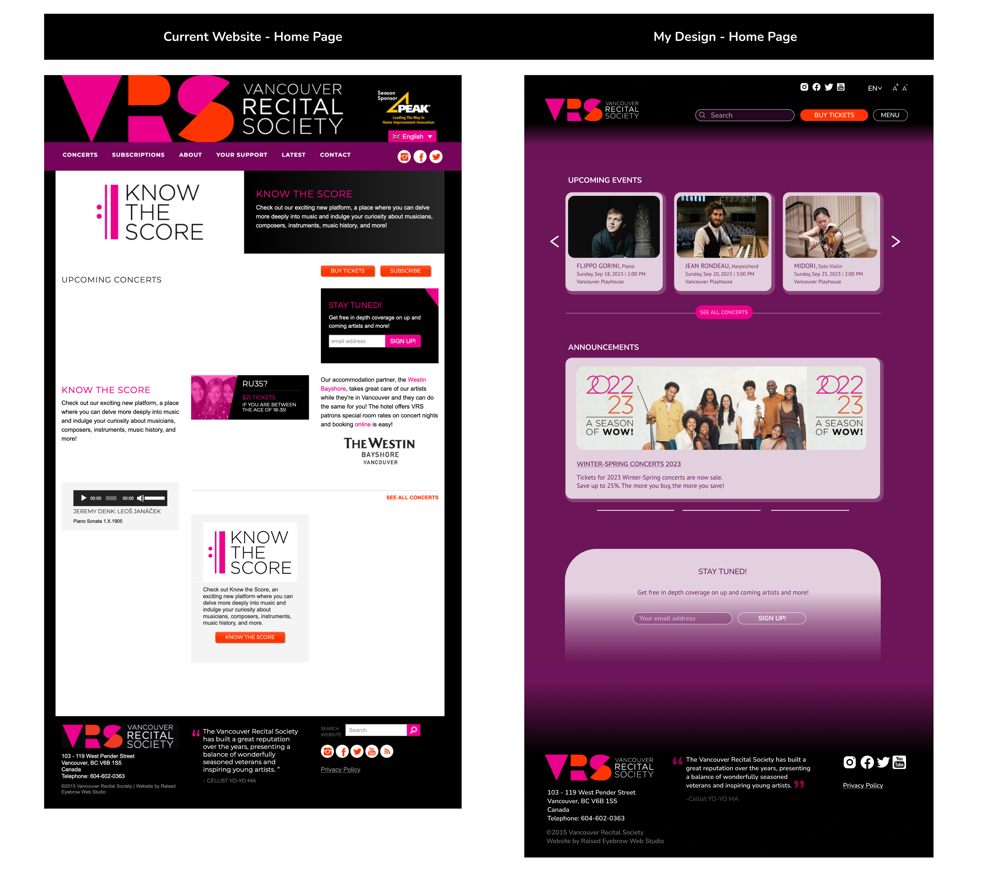
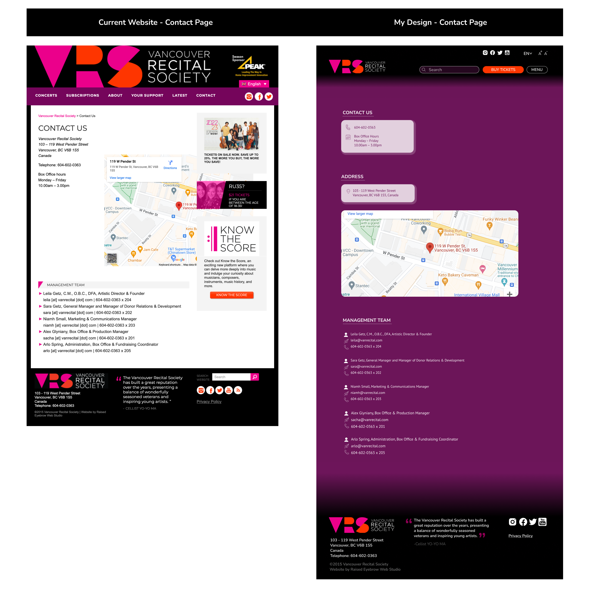
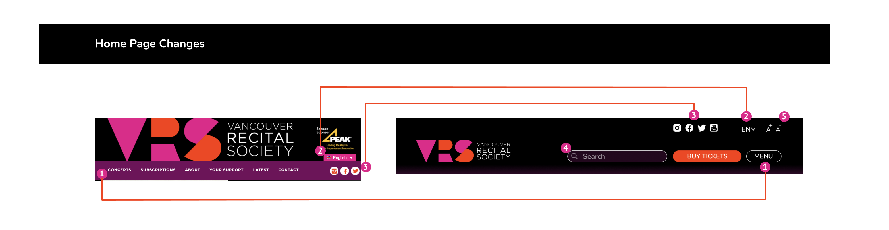

Vancouver Recital Society
Dekstop App | Case Study
The Vancouver Recital Society (VRS) is one of the premier concert presenters in North America, offering a milestone debut series for rising stars and an internationally renowned concert series for the world’s most celebrated performing artists.

Case Study Information
⏰ Project duration : 2 Weeks
🦸🏻♀️ My role: UI/UX Designer
Problem Analysis
The consolidation of all buttons in the menu creates complexity and confusion for users, making it difficult to understand their functionality.
The carousel on the homepage does not allow users to make selections directly from the menu. Instead, the content automatically scrolls in a slideshow format.
Leaving the Upcoming concerts field blank deprives users of relevant information.
The placement and visual design of buttons used for ticket purchases and newsletter sign-ups, which are essential functions of the site, lack effectiveness and clarity.
The "See all concerts" button on the homepage is not easily distinguishable, requiring improved visibility and ease of access.
Navigating the site and comprehending the information is challenging, highlighting the need for a user-friendly interface to enhance usability.
The information on the Contact Us page is not easy to understand, and the map is not displayed properly on the site.
User Goals
As a user, I want to explore upcoming piano recitals and events. So I can plan and attend the performances that interest me.
As a user, I want to navigate through the website easily. So I can find the information I need without any confusion.
As a user, I want to receive updates and notifications about new recitals and events. So I can easily sign up for the newsletter.
As a user, I want to have clear and detailed event descriptions. So I can have a good understanding of what to expect from each recital or event.
Solution
I improved the user experience of the website by rearranging the elements and their appearances without compromising the branding and overall vibe of the site.
High Fidelity Wireframes
  
1. I gathered the other links, aside from the main operations that users can perform, under the Menu section.
2. I made the language selection button more fitting for the website.
3. By changing the placement and icons of the social media buttons, I ensured coherence among them.
4. By placing the search box on the top of the homepage, I facilitated easier navigation for users to find what they are looking for within the site.
5. By allowing users to change the text sizes on the site, I have made it easier to read.
1. I introduced the ability for users to make selections in the carousel.
2. I improved the visibility and understanding of upcoming events for users.
3. For the ticket purchasing process, which is one of the main functions of the website, I changed the design and placement of the button to make it more prominent.
4. The "Subscribe" button was meaningless without any explanation. Users were having difficulty understanding why they should subscribe. I moved this button under the Menu section, and when users click on it, they will be presented with a more meaningful and informative page.
5. I prioritized the placement of the "Stay tuned" section to collect users' emails, aligning it with other content.
6. I changed the placement and appearance of the "See all concerts" button to make it easier for users to find.
1. I facilitated easier access to the desired information for users by adding icons based on contact information and keeping related elements together.
2. By placing the address information in the area where the map is located, I grouped the relevant elements together and increased their visibility.
3. For the employees listed in the Management Team, I created a more understandable list. The previous version consisted only of texts, making it more difficult to comprehend.
Conclusion
Through the website redesign, my main focus was on enhancing event visibility and other essential features to ensure a valuable user experience. By strategically repositioning elements, I was able to facilitate seamless navigation for users. This project has expanded my understanding of user-centric design principles and their significance in creating engaging digital experiences.
My Other Projects
You can access my other projects by clicking on the button below.